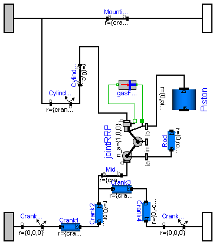

| Name | Description |
|---|---|
| Cylinder | |
| GasForce | |
| Cylinder_analytic | One cylinder with analytic handling of kinematic loop |
| Name | Default | Description |
|---|---|---|
| animation | true | = true, if animation shall be enabled |
| cylinderTopPosition | 0.42 | Length from crank shaft to end of cylinder. [m] |
| pistonLength | 0.1 | Length of cylinder [m] |
| rodLength | 0.2 | Length of rod [m] |
| crankLength | 0.2 | Length of crank shaft in x direction [m] |
| crankPinOffset | 0.1 | Offset of crank pin from center axis [m] |
| crankPinLength | 0.1 | Offset of crank pin from center axis [m] |
| cylinderInclination | 0 | Inclination of cylinder [rad] |
| crankAngleOffset | 0 | Offset for crank angle [rad] |
| cylinderLength | cylinderTopPosition - (pistonLength + rodLength - crankPinOffset) | Maximum length of cylinder volume [m] |
model Cylinder
import SI = Modelica.SIunits;
parameter Boolean animation=true "= true, if animation shall be enabled";
parameter SI.Length cylinderTopPosition=0.42
"Length from crank shaft to end of cylinder.";
parameter SI.Length pistonLength=0.1 "Length of cylinder";
parameter SI.Length rodLength=0.2 "Length of rod";
parameter SI.Length crankLength=0.2 "Length of crank shaft in x direction";
parameter SI.Length crankPinOffset=0.1 "Offset of crank pin from center axis";
parameter SI.Length crankPinLength=0.1 "Offset of crank pin from center axis";
parameter SI.Angle cylinderInclination=0 "Inclination of cylinder";
parameter SI.Angle crankAngleOffset=0 "Offset for crank angle";
parameter SI.Length cylinderLength=cylinderTopPosition - (pistonLength +
rodLength - crankPinOffset) "Maximum length of cylinder volume";
MultiBody.Parts.BodyCylinder Piston(
diameter=0.1,
r={0,pistonLength,0},
color={180,180,180},
animation=animation);
MultiBody.Parts.BodyBox Rod(
widthDirection={1,0,0},
height=0.06,
color={0,0,200},
width=0.02,
r_shape={0,-0.02,0},
r={0,rodLength,0},
animation=animation);
MultiBody.Joints.Revolute B2(
n={1,0,0},
phi_start=0,
cylinderLength=0.02,
animation=animation,
cylinderDiameter=0.055);
MultiBody.Parts.BodyBox Crank4(
height=0.05,
widthDirection={1,0,0},
width=0.02,
r={0,-crankPinOffset,0},
animation=animation);
MultiBody.Parts.BodyCylinder Crank3(
r_shape={-0.01,0,0},
length=0.12,
diameter=0.03,
r={crankPinLength,0,0},
color={180,180,180},
animation=animation);
MultiBody.Parts.BodyCylinder Crank1(
diameter=0.05,
r_shape={-0.01,0,0},
length=0.12,
r={crankLength - crankPinLength,0,0},
color={180,180,180},
animation=animation);
MultiBody.Parts.BodyBox Crank2(
height=0.05,
widthDirection={1,0,0},
width=0.02,
r={0,crankPinOffset,0},
animation=animation);
MultiBody.Joints.Revolute B1(
n={1,0,0},
planarCutJoint=true,
cylinderLength=0.02,
animation=animation,
cylinderDiameter=0.055);
MultiBody.Parts.FixedTranslation Mid(r={crankPinLength/2,0,0}, animation=
false);
MultiBody.Joints.ActuatedPrismatic Cylinder(
s_start=-0.3,
n={0,-1,0},
boxWidth=0.02);
MultiBody.Interfaces.Frame_a crank_a;
MultiBody.Interfaces.Frame_b crank_b;
MultiBody.Interfaces.Frame_a cylinder_a;
MultiBody.Interfaces.Frame_b cylinder_b;
MultiBody.Parts.FixedTranslation Mounting(r={crankLength,0,0}, animation=
false);
MultiBody.Parts.FixedRotation CylinderInclination(
r={crankLength - crankPinLength/2,0,0},
n_y={0,cos(cylinderInclination),sin(cylinderInclination)},
animation=false,
rotationType=MultiBody.Types.RotationTypes.TwoAxesVectors);
MultiBody.Parts.FixedRotation CrankAngle1(
n_y={0,cos(crankAngleOffset),sin(crankAngleOffset)},
animation=false,
rotationType=MultiBody.Types.RotationTypes.TwoAxesVectors);
MultiBody.Parts.FixedRotation CrankAngle2(
n_y={0,cos(-crankAngleOffset),sin(-crankAngleOffset)},
animation=false,
rotationType=MultiBody.Types.RotationTypes.TwoAxesVectors);
MultiBody.Parts.FixedTranslation CylinderTop(r={0,cylinderTopPosition,0},
animation=false);
GasForce gasForce(L=cylinderLength, d=0.1);
equation
connect(B1.frame_a, Mid.frame_b);
connect(Mounting.frame_a, cylinder_a);
connect(Mounting.frame_b, cylinder_b);
connect(Rod.frame_a, B1.frame_b);
connect(Cylinder.frame_b, Piston.frame_b);
connect(Crank1.frame_a, CrankAngle1.frame_b);
connect(B2.frame_a, Piston.frame_a);
connect(Rod.frame_b, B2.frame_b);
connect(CrankAngle1.frame_a, crank_a);
connect(Crank4.frame_b, CrankAngle2.frame_a);
connect(CrankAngle2.frame_b, crank_b);
connect(Cylinder.bearing, gasForce.flange_b);
connect(Cylinder.axis, gasForce.flange_a);
connect(CylinderInclination.frame_b, CylinderTop.frame_a);
connect(CylinderInclination.frame_a, cylinder_a);
connect(Crank1.frame_b, Crank2.frame_a);
connect(Crank3.frame_b, Crank4.frame_a);
connect(Crank3.frame_a, Crank2.frame_b);
connect(Crank2.frame_b, Mid.frame_a);
connect(CylinderTop.frame_b, Cylinder.frame_a);
end Cylinder;

| Name | Default | Description |
|---|---|---|
| animation | true | = true, if animation shall be enabled |
| cylinderTopPosition | 0.42 | Length from crank shaft to end of cylinder. [m] |
| pistonLength | 0.1 | Length of cylinder [m] |
| rodLength | 0.2 | Length of rod [m] |
| crankLength | 0.2 | Length of crank shaft in x direction [m] |
| crankPinOffset | 0.1 | Offset of crank pin from center axis [m] |
| crankPinLength | 0.1 | Offset of crank pin from center axis [m] |
| cylinderInclination | 0 | Inclination of cylinder [rad] |
| crankAngleOffset | 0 | Offset for crank angle [rad] |
| cylinderLength | cylinderTopPosition - (pistonLength + rodLength - crankPinOffset) | Maximum length of cylinder volume [m] |
model Cylinder_analytic
"One cylinder with analytic handling of kinematic loop"
import SI = Modelica.SIunits;
parameter Boolean animation=true "= true, if animation shall be enabled";
parameter SI.Length cylinderTopPosition=0.42
"Length from crank shaft to end of cylinder.";
parameter SI.Length pistonLength=0.1 "Length of cylinder";
parameter SI.Length rodLength=0.2 "Length of rod";
parameter SI.Length crankLength=0.2 "Length of crank shaft in x direction";
parameter SI.Length crankPinOffset=0.1 "Offset of crank pin from center axis";
parameter SI.Length crankPinLength=0.1 "Offset of crank pin from center axis";
parameter SI.Angle cylinderInclination=0 "Inclination of cylinder";
parameter SI.Angle crankAngleOffset=0 "Offset for crank angle";
parameter SI.Length cylinderLength=cylinderTopPosition - (pistonLength +
rodLength - crankPinOffset) "Maximum length of cylinder volume";
MultiBody.Parts.BodyBox Crank4(
height=0.05,
widthDirection={1,0,0},
width=0.02,
r={0,-crankPinOffset,0},
animation=animation);
MultiBody.Parts.BodyCylinder Crank3(
r_shape={-0.01,0,0},
length=0.12,
diameter=0.03,
r={crankPinLength,0,0},
color={180,180,180},
animation=animation);
MultiBody.Parts.BodyCylinder Crank1(
diameter=0.05,
r_shape={-0.01,0,0},
length=0.12,
r={crankLength - crankPinLength,0,0},
color={180,180,180},
animation=animation);
MultiBody.Parts.BodyBox Crank2(
height=0.05,
widthDirection={1,0,0},
width=0.02,
r={0,crankPinOffset,0},
animation=animation);
MultiBody.Parts.FixedTranslation Mid(r={crankPinLength/2,0,0}, animation=
false);
MultiBody.Interfaces.Frame_a crank_a;
MultiBody.Interfaces.Frame_b crank_b;
MultiBody.Interfaces.Frame_a cylinder_a;
MultiBody.Interfaces.Frame_b cylinder_b;
MultiBody.Parts.FixedTranslation Mounting(r={crankLength,0,0}, animation=
false);
MultiBody.Parts.FixedRotation CylinderInclination(
r={crankLength - crankPinLength/2,0,0},
n_y={0,cos(cylinderInclination),sin(cylinderInclination)},
animation=false,
rotationType=MultiBody.Types.RotationTypes.TwoAxesVectors);
MultiBody.Parts.FixedRotation CrankAngle1(
n_y={0,cos(crankAngleOffset),sin(crankAngleOffset)},
animation=false,
rotationType=MultiBody.Types.RotationTypes.TwoAxesVectors);
MultiBody.Parts.FixedRotation CrankAngle2(
n_y={0,cos(-crankAngleOffset),sin(-crankAngleOffset)},
animation=false,
rotationType=MultiBody.Types.RotationTypes.TwoAxesVectors);
MultiBody.Parts.FixedTranslation CylinderTop(r={0,cylinderTopPosition,0},
animation=false);
Joints.Assemblies.JointRRP jointRRP(
n_a={1,0,0},
n_b={0,-1,0},
rRod1_ia={0,rodLength,0},
animation=false,
rRod2_ib=-{0,pistonLength,0});
MultiBody.Parts.BodyBox Rod(
widthDirection={1,0,0},
height=0.06,
color={0,0,200},
width=0.02,
r_shape={0,-0.02,0},
r={0,rodLength,0},
animation=animation);
MultiBody.Parts.BodyCylinder Piston(
diameter=0.1,
r={0,pistonLength,0},
color={180,180,180},
animation=animation);
GasForce gasForce(L=cylinderLength, d=0.1);
equation
connect(Mounting.frame_a, cylinder_a);
connect(Mounting.frame_b, cylinder_b);
connect(Crank1.frame_a, CrankAngle1.frame_b);
connect(CrankAngle1.frame_a, crank_a);
connect(Crank4.frame_b, CrankAngle2.frame_a);
connect(CrankAngle2.frame_b, crank_b);
connect(CylinderInclination.frame_a, cylinder_a);
connect(Crank1.frame_b, Crank2.frame_a);
connect(Crank3.frame_b, Crank4.frame_a);
connect(Crank3.frame_a, Crank2.frame_b);
connect(Crank2.frame_b, Mid.frame_a);
connect(jointRRP.frame_ia, Rod.frame_a);
connect(Mid.frame_b, jointRRP.frame_a);
connect(CylinderInclination.frame_b, CylinderTop.frame_a);
connect(gasForce.flange_a, jointRRP.axis);
connect(jointRRP.bearing, gasForce.flange_b);
connect(jointRRP.frame_ib, Piston.frame_b);
connect(jointRRP.frame_b, CylinderTop.frame_b);
end Cylinder_analytic;
| Name | Default | Description |
|---|---|---|
| L | Length of cylinder [m] | |
| d | diameter of cylinder [m] | |
| k0 | 0.01 | |
| k1 | 1 | |
| k | 1 |
model GasForce
import SI = Modelica.SIunits;
extends Modelica.Mechanics.Translational.Interfaces.Compliant;
parameter SI.Length L "Length of cylinder";
parameter SI.Length d "diameter of cylinder";
parameter Real k0=0.01;
parameter Real k1=1;
parameter Real k=1;
constant Real pi=Modelica.Constants.pi;
constant Real PI=Modelica.Constants.pi;
// Only for compatibility reasons
SI.Position x;
SI.Position y;
SI.Density dens;
SI.Pressure press "cylinder pressure";
SI.Volume V;
SI.Temperature T;
SI.Velocity v_rel;
equation
y = -s_rel/L;
x = 1 + s_rel/L;
v_rel = der(s_rel);
press = if v_rel < 0 then (if x < 0.987 then 177.4132*x^4 - 287.2189*x^3 +
151.8252*x^2 - 24.9973*x + 2.4 else 2836360*x^4 - 10569296*x^3 + 14761814*x
^2 - 9158505*x + 2129670) else (if x > 0.93 then -3929704*x^4 + 14748765*x^
3 - 20747000*x^2 + 12964477*x - 3036495 else 145.930*x^4 - 131.707*x^3 +
17.3438*x^2 + 17.9272*x + 2.4);
f = -1.0E5*press*pi*d^2/4;
V = k0 + k1*(1 - x);
dens = 1/V;
press*V = k*T;
end GasForce;